How a cutter dies
What a milling cutter is, what the settings in our data physically do to it, how it wears and snaps, and why the machine's motor current and vibration change long before it breaks. Every number here is from our dataset or worked out from it.
01The machine
A CNC milling machine holds a block of metal on a table and spins a small cutting tool above it. A computer program moves the table left and right (the X direction), forwards and back (Y), and the tool up and down (Z), so the spinning tool shaves metal off along an exact path. Our data comes from a Haas VF-1 machine at Rzeszów University of Technology in Poland, cutting blocks of hardened chromium-molybdenum steel (grade 42CrMo4).
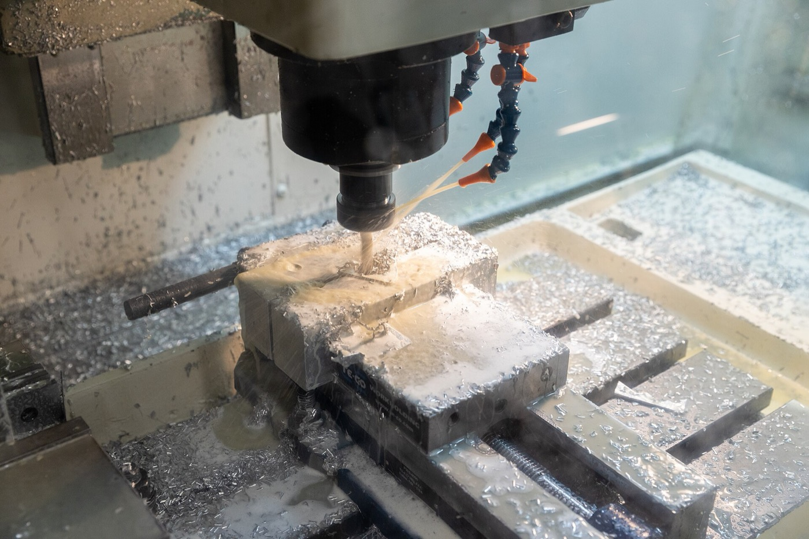
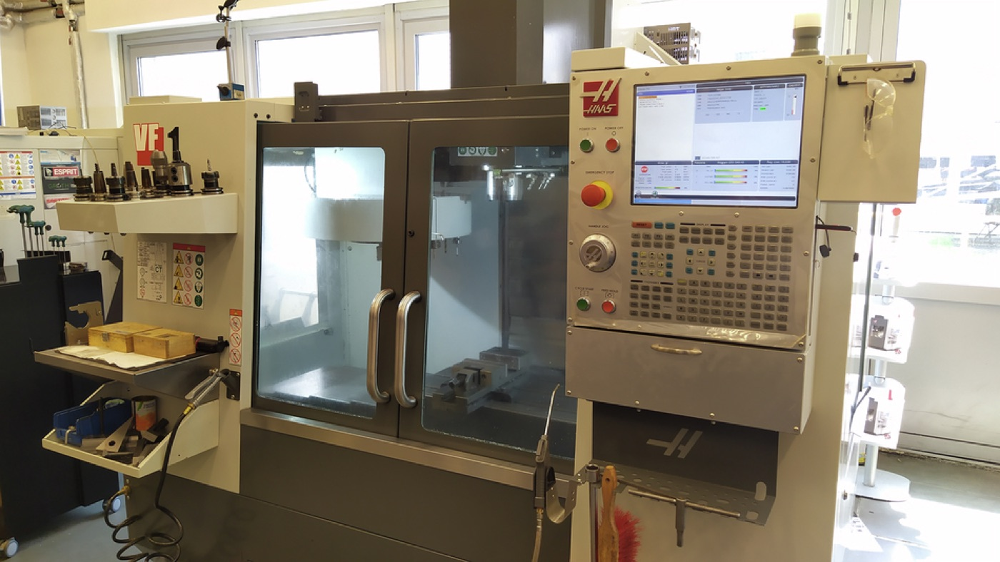
02The cutter
The cutting tool is an end mill: a solid rod of tungsten carbide, 10 mm across, with four spiral grooves called flutes. The sharp edge along each flute is a tooth. The spiral (the helix) makes each tooth enter the steel gradually instead of all at once, and carries chips up and away. The very bottom corner of each tooth is the most fragile point; that is usually where it chips first. The tool is coated with a thin gold or grey ceramic layer (TiAlN) that resists heat.
The cutter is gripped in a holder, which fits into the machine's spinning shaft, the spindle. In this experiment the holder was a shrink-fit type: it is heated, the cutter slides in, and it grips tight as it cools.
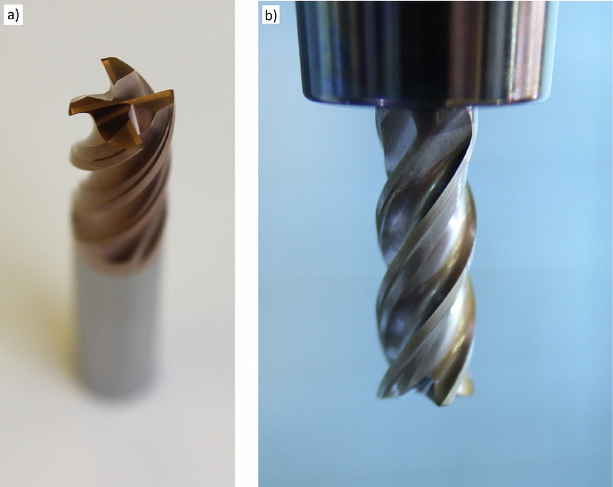
03What one cycle is
Each steel block was cut away in rings. The cutter travelled once around the outside of the block, shaving off a ring of steel. That one lap is one cycle: about 35 cm of path and about 31 seconds of actual cutting. Then it moved one step inwards and did the next ring. When a layer was finished, the tool stepped down and started again on the next layer. A cutter worked through ring after ring, block after block, until it broke.
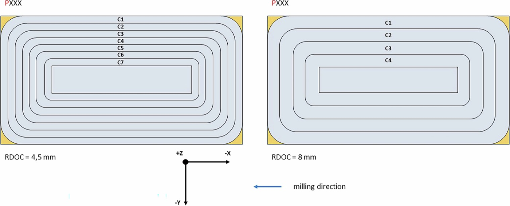
The cutter turns clockwise and travels clockwise around the block, so each tooth bites in at its thickest and leaves thin. This is called climb milling.
04The settings, and what each one does to the cutter
The spin speed and feed were the same for every cutter. Four things were changed between cutters, and each one changes the force on the tool.
| Setting | Values | What it physically does | What happened in our data |
|---|---|---|---|
| Sideways bite (radial depth) | 4.5 or 8 mm | How much of the cutter's width is buried in the steel: 45% or 80%. A wider bite means each tooth stays in the steel longer and more teeth cut at once, so the force is higher. The cutter maker recommends at most 45%. | The 5 cutters at 8 mm lived 30–54 cycles. At 4.5 mm (normal holder) they lived 60–150. Roughly a third of the life. |
| Depth (axial depth) | 5 or 10 mm | How much of the cutter's height is cutting. Twice the depth means twice the steel per second and about twice the force on the tool. | Surprisingly little effect on life on its own. |
| Holder length | 80 or 160 mm | How far the cutter sticks out from the machine. A sticking-out tool bends like a diving board: bending grows with the cube of length, so twice as long is about 5–8 times floppier. A floppy tool starts shaking on its own (chatter), which can snap it fast. | Both cutters on the long holder died almost at once: at cycle 1 and cycle 15. |
| Steel hardness | 35–42 HRC | Harder steel needs more force to cut and wears the edge faster. | With the same settings, harder blocks gave shorter lives (cutter 6 at 40 HRC: 30 cycles, against 41–50 for cutters at 35–37 HRC). |
How hard the cutter is working
From the settings we can work out how much steel is removed each minute and roughly how much power and force that takes. The power and force columns are estimates from standard cutting formulas; the measured spindle current follows their ratios within about 10%.
| Depth × sideways bite | Steel removed per minute | Cutting power | Average push on the edge |
|---|---|---|---|
| 5 × 4.5 mm | 14.4 cm³ | ≈ 1.5 kW | ≈ 890 N, the weight of a 90 kg person |
| 5 × 8 mm | 25.6 cm³ | ≈ 2.5 kW | ≈ 1,500 N |
| 10 × 4.5 mm | 28.8 cm³ | ≈ 3.0 kW | ≈ 1,800 N |
| 10 × 8 mm | 51.2 cm³ | ≈ 5.1 kW | ≈ 3,000 N, three people standing on a 10 mm rod |
05How a cutter wears, and how it dies
Every tooth hit is a small hammer blow at several hundred degrees. Over hundreds of thousands of hits the edge degrades in a few ways:
- Flank wear. The face just below the edge rubs against the freshly cut steel and wears flat. A blunter edge rubs instead of slicing, so the force goes up.
- Crater wear. The hot chip sliding over the top face scoops out a shallow crater.
- Chipping. Small pieces break off the edge from the repeated impacts.
- Fracture. A whole tooth, or the whole cutter, snaps when the force or the bending gets too high. This is how every cutter in our data ended.
In our data the failure was judged by eye: a cutter counted as dead when it had snapped or lost a tooth. Nobody measured the wear in between, so our dataset tells us when each cutter broke, not how worn it was along the way.
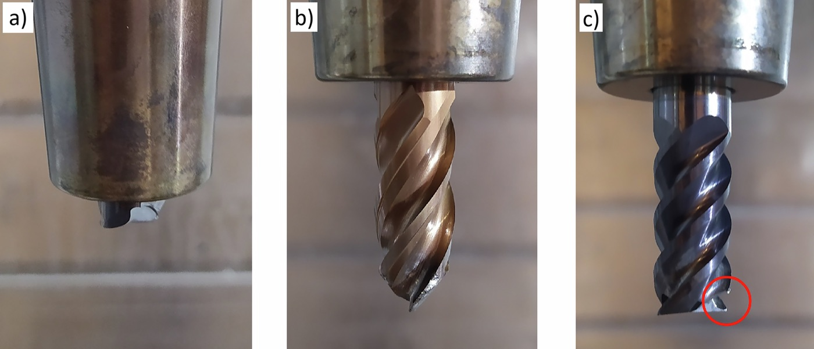
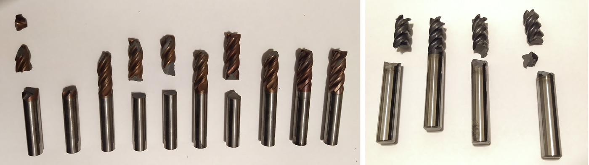
06What the sensors feel
Nobody can look at the cutter while it spins at 53 turns a second inside a cloud of chips and coolant. So the machine was fitted with two kinds of sensors that feel the cutting indirectly.
Motor current: an electricity meter on every motor
A motor draws more electricity when it has to push harder. The spindle motor spins the cutter, so its current shows the twisting effort of cutting. The table motors (X and Y) push the steel into the cutter, so their current shows how hard the steel is pushing back. A blunt edge rubs instead of slicing: it pushes back more against the table than it adds to the twisting, so the table current rises fastest as the cutter wears.
These meters read the average strength of the current five times a second. That is enough to see the load rise and fall around the block, but far too slow to see individual tooth hits.
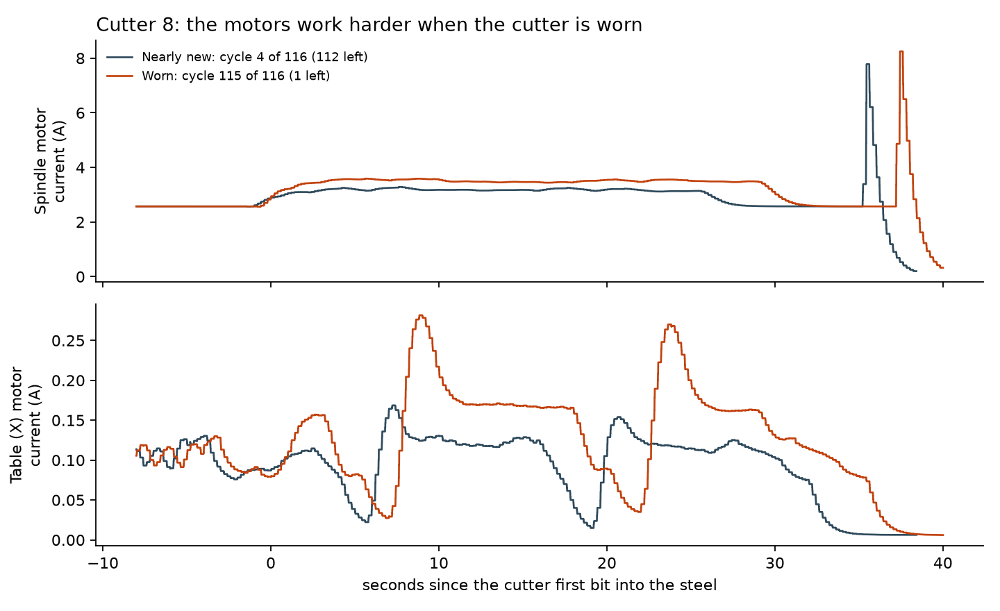
Vibration: a microphone that hears every tooth
Accelerometers are vibration sensors. Eight were fixed to the machine: three on the spindle head and five on the table drives. They take 25,000 readings a second, fast enough to hear each tooth strike the steel.
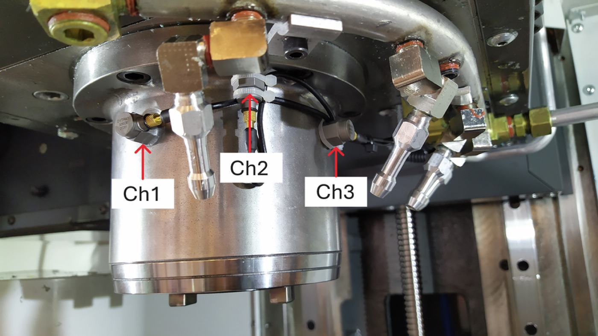
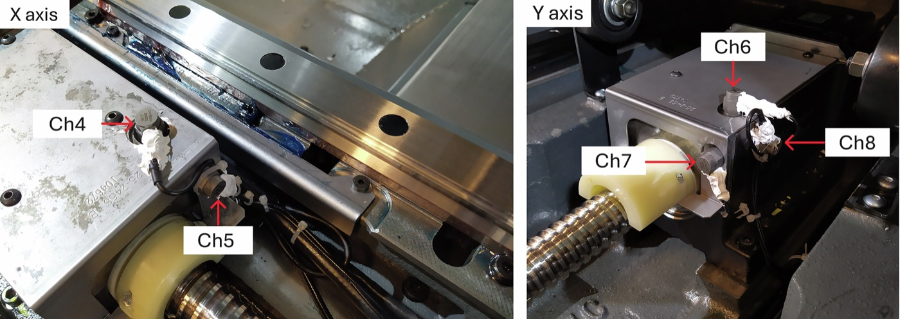
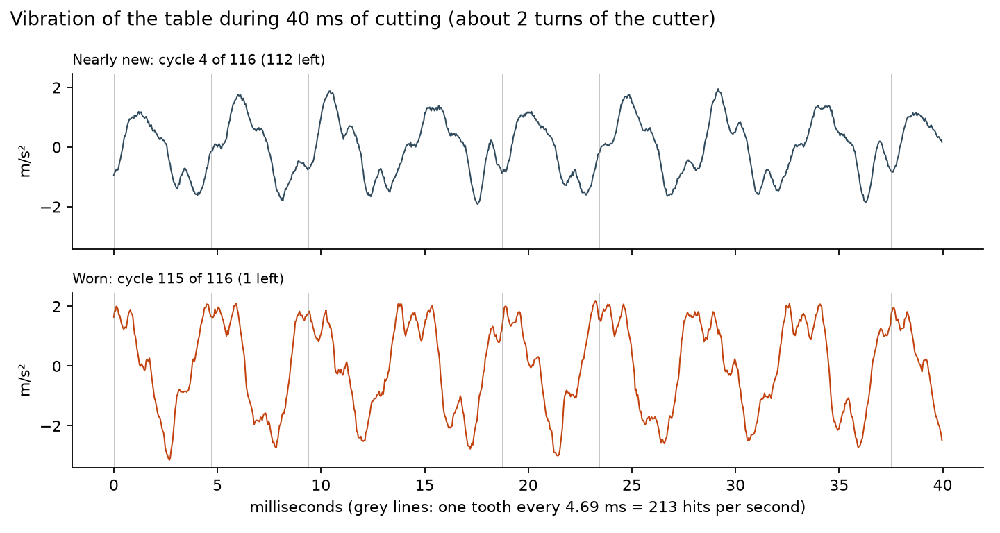
If you split the vibration into its rhythms, like splitting a chord into notes, you see sharp lines at exactly the machine's beats: 213 Hz for the tooth hits and its multiples. As the cutter wears, the lines grow and the background noise between them rises. A chipped tooth makes one of the four hits different from the others, so a rhythm that repeats once per turn (53 Hz) appears. In our data that once-per-turn line at least doubled over the last 10% of life in 10 of our 13 cutters.
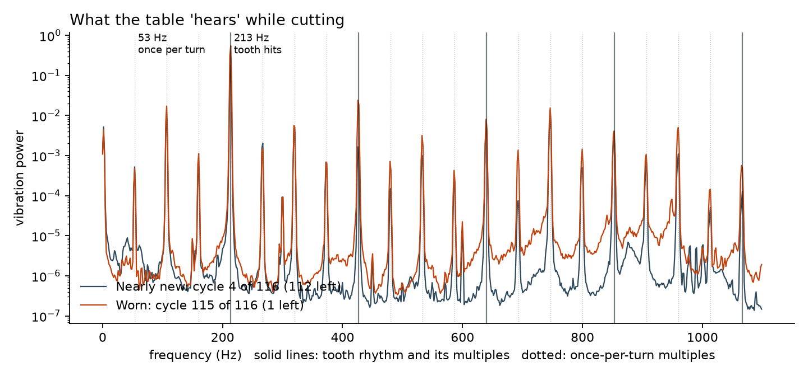
| Motor current | Vibration | |
|---|---|---|
| Readings per second | 5 real updates (logged 500 times) | 25,000 |
| Can see | How hard each motor is working; entering and leaving the steel; slow rise as the cutter wears | Every tooth hit; a chipped tooth; chatter; rubbing noise |
| Cannot see | Anything as fast as one turn or one tooth | Steady pushing force (it only senses change) |
| Cheap in a real factory? | Yes. Clip-on sensors on the motor cables, no drilling. | Needs sensors glued or bolted near the cut. |
07A whole life in the data
Put every cycle of every cutter side by side and the same story repeats. For the first third to half of its life nothing much changes. Then the signals bend upwards, gently at first and then sharply, until the cutter breaks. That is the runaway stage of wear from section 5, showing up in the electricity and the vibration.
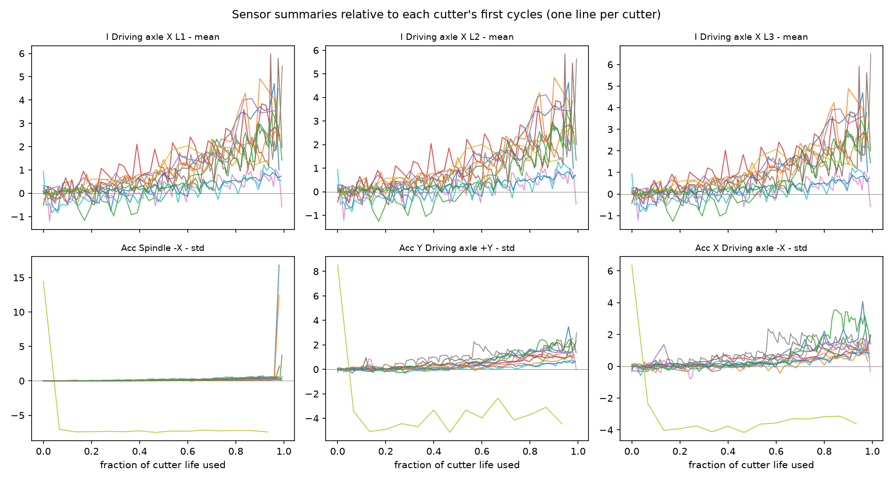
08So what exactly do we predict?
The whole chain, from the settings to the decision:
After every cycle the model reads that cycle's current and vibration, together with the settings and how much work the cutter has already done, and estimates the chance that the cutter breaks within the next 1, 3, 5 … cycles. From that one curve we get the number of cycles left (with a range) and the risk of carrying on. The decision step then weighs that risk against the cost of a planned change.
The model never sees the wear itself. It learns the link between what the signals look like and how close the cutter was to breaking, from cutters that were run until they broke.
09Same physics, other machines
Our main dataset has only 13 cutter lives, so we are adding other public datasets recorded on different machines. They use different sensors and some stop at a measured wear limit instead of breakage. The physics gives us a common language for all of them:
- Work done instead of cycles. Measure a cutter's age in steel removed (cm³), because a "cycle" means something different on every machine.
- Fraction of life used. 0 for a new cutter, 1 at the end of its life, whichever way the dataset defines the end.
- Energy per cm³ of steel removed. Spindle current (or torque) divided by the steel removed. A blunt edge spends more energy on every cm³, whatever the machine or setting. In our data this number was the same across all four settings for new cutters, within about 12%.
- Change since the cutter was new. Compare every signal with the same cutter's first few cycles. This cancels most differences between machines and sensor mountings.